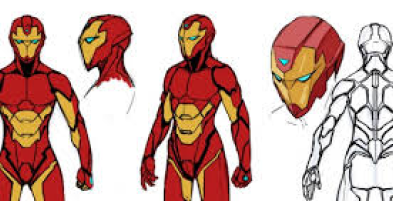

Iron Man 2, A Futuristic Vision of Immersive Technology
Dive into the thrilling world of superheroes with "Iron Man 2," the explosive sequel to the blockbuster that conquered the world. Directed by Jon Favreau and released in 2010, this action movie once again propels you into the exciting adventures of Tony Stark, the billionaire inventor turned Iron Man. This film offers a fascinating glimpse of future technologies that resonate remarkably with our concept of immersive television.
From Holographic Interfaces* to Augmented Reality
One of the most striking aspects of Iron Man 2 is its use of interactive holographic interfaces. Tony Stark manipulates 3D projections in the air, a technology that foreshadows our idea of a television that physically transforms space. Although the movie focuses on holograms rather than augmented reality, the concept of an interactive environment is clearly present.
Iron Man's Suit, Total Immersion
The Iron Man suit itself can be seen as an extreme form of augmented reality. It completely envelops its user, providing real-time information and enhancing physical capabilities. This fusion of man and technology evokes the total immersion that our future television aims to create.

Diagram of Iron Man's suit
The Stark Expo, A World Transformed by Technology
The Stark Expo presented in the film is a striking example of how technology can transform an environment. Although temporary, this exhibition shows how a space can be radically altered to create an immersive experience, just like our future television would transform an entire room.